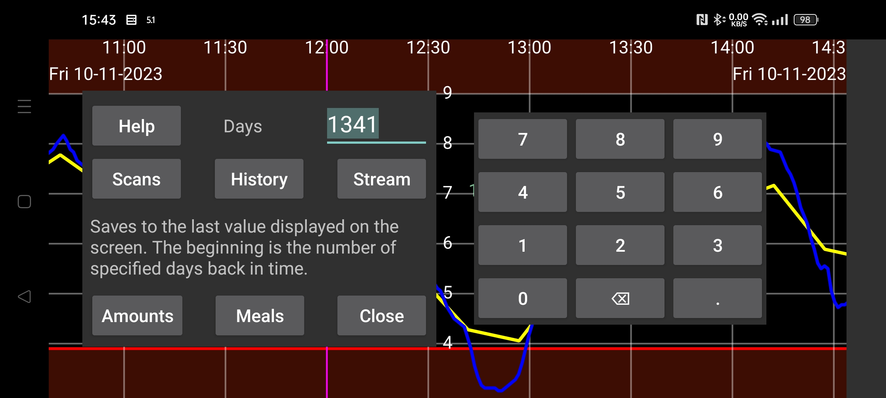

Juggluco-dakı məlumatları fayla ixrac edin.
Yeməklər HTML formatında, digər məlumatlar isə tabulyasiya ilə ayrılmış dəyərlər formatında (.tsv) saxlanılır. Bu faylları LibreOffice Calc, Microsoft Excel, Mathematica və R kimi proqramlarla açmaq olar. TSV, sahələrin vergüllə deyil, tabulyasiya işarələri ilə ayrıldığı CSV-yə bənzəyir. UTF-8 kodlaşdırmasından istifadə olunur.
Sütunların mənası https://www.juggluco.nl/Juggluco/webserver.html səhifəsində izah edilir.
Gün: Juggluco 7.1.0-dan başlayaraq neçə günlük məlumat saxlanılacağını seçə bilərsiniz. Son tarix ekranda görünən zaman aralığının sağ sərhədidir. Buna görə keçmiş məlumatlara baxırsınızsa, yalnız həmin əvvəlki dövrün məlumatları ixrac edilir (sol orta menyu → Statistika bölməsində olduğu kimi).
Kalibrlənmiş: Kalibrlənmiş göstəriciləri saxlayır. Bu seçimlə Skanlar, Axın və Tarixçə fayllarında hər göstəricinin həm kalibrlənmiş, həm də ilkin (kalibrlənməmiş) qiyməti saxlanılır. LibreView formatında isə kalibrlənmiş qiymət mövcuddursa yalnız o, əks halda ilkin qiymət saxlanılır.
Juggluco 7.1.0-dan başlayaraq bu məlumatları Juggluco-nun veb-serverindən də almaq mümkündür: sol menyu → Tənzimləmələr → Məlumat mübadiləsi → Veb-server. Əlavə məlumat: https://www.juggluco.nl/Juggluco/webserver.html.
LibreView: Məlumatları LibreView formatında saxlayır. Bu, FreeStyle Libre olmayan sensorlardan alınan göstəriciləri də həmin formatı tələb edən proqram və veb-xidmətlərə idxal etməyə imkan verir. Dexcom sensorları üçün beşdəqiqəlik göstəricilər, Sibionics sensorları üçün isə hər beş dəqiqəyə bir Axın göstəricisi saxlanılır. Libre 0, 2 və 3 sensorlarının Tarixçə göstəriciləri də saxlanılır. İnsulin dozaları, karbohidratlar və qeydlər yalnız sol menyu → Tənzimləmələr → Məlumat mübadiləsi → LibreView → Miqdarları göndər bölməsində bu kateqoriyalara etiketlər təyin etdikdən sonra saxlanılır.